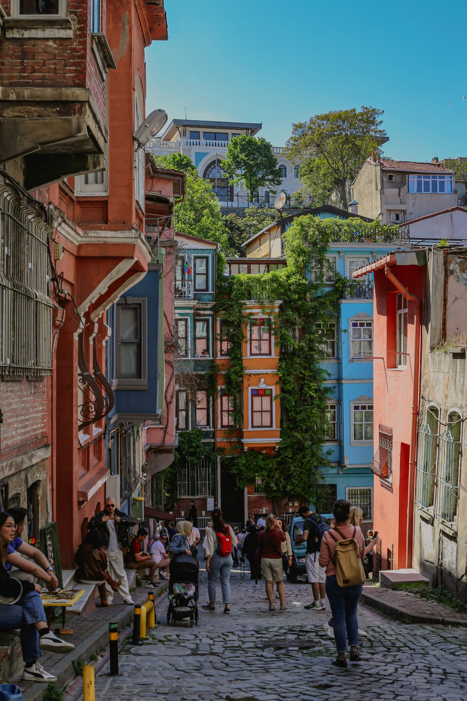

TAŞ DUVARLARIN ARASINDA · 4 DK
Bir avluda soluklan
Renkli cephelerin arasından içeri çekil. Tarihi kemerlerin ve taş duvarların gölgesinde şehrin sesi bir anda uzaklaşır.
YAKINDAFener · Balat↗
SAHİLDE, AVLULARDA, ARKA SOKAKLARDA
İSTANBUL'U YAVAŞTAN KEŞFET / NO. 01
Şehirden kaçmak için şehirden çıkman gerekmiyor. Bir sokağı değiştirmen yeter.

FENER—BALAT / 01NOT DEFTERİNDE ARA
5 keşif
TAŞ DUVARLARIN ARASINDA · 4 DK
Renkli cephelerin arasından içeri çekil. Tarihi kemerlerin ve taş duvarların gölgesinde şehrin sesi bir anda uzaklaşır.
ŞEHİRDE YUKARI · 3 DK
Bir sokağın diğerine bağlandığı merdivenlerde dur. Her basamak, Karaköy'ün üst üste birikmiş hikâyelerinden birini açar.
SU KENARINDA · 2 DK
Kıyıda uygun bir basamak bul. Vapurların gelişini izle, martı seslerini say ve takvime kısa bir ara ver.
KENDİNE BİR SAYFA · 3 DK
İstiklal'in telaşından eski bir kitapçının raflarına karış. Aramaya gelmediğin bir kitabı bulmak, günün tesadüfü olsun.
YEŞİL BİR NEFES · 4 DK
Koruların gölgeli yollarında plansızca yürü. Bir bank, bir kuş sesi ve yukarıdan süzülen ışık; programın bu kadar.
Bu başlıkta bir keşif bulamadık. Başka bir kelime dene.